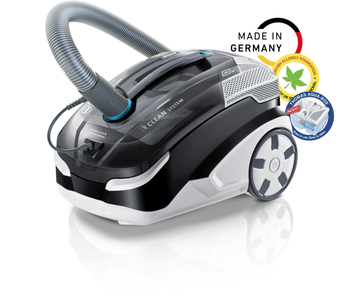
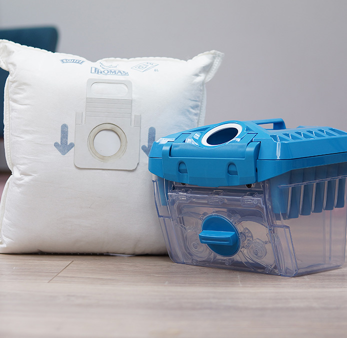

<!DOCTYPE html>
<html lang="ru"></html>
<head>
  <meta charset="UTF-8"/>
  <meta name="viewport" content="width=device-width, initial-scale=1.0"/>
  <meta http-equiv="X-UA-Compatible" content="ie=edge"/>
  <title>Thomas Starclean</title>
</head>
<body>
  <style>* {
  margin: 0;
  padding: 0;
  box-sizing: border-box;
}
*:before, *:after {
  box-sizing: border-box;
}

.tms-img-resp {
  display: inline-block;
  max-width: 100%;
  height: auto;
}

.tms-h1 {
  font-family: Arial, sans-serif;
  font-style: normal;
  font-weight: bold;
  font-size: 64px;
  line-height: 110%;
  color: #3D505A;
}

.tms-h2 {
  font-family: Arial, sans-serif;
  font-style: normal;
  font-weight: bold;
  font-size: 52px;
  line-height: 110%;
  color: #3D505A;
}

.tms-large-p {
  font-family: Arial, sans-serif;
  font-style: normal;
  font-weight: normal;
  font-size: 28px;
  line-height: 120%;
  letter-spacing: -0.01em;
  color: #3D505A;
  padding-bottom: 20px;
}

.tms-medium-p {
  font-family: Arial, sans-serif;
  font-style: normal;
  font-weight: normal;
  font-size: 24px;
  line-height: 130%;
  letter-spacing: -0.02em;
  color: #3D505A;
}

.tms-small-p {
  font-family: Arial, sans-serif;
  font-style: normal;
  font-weight: bold;
  font-size: 18px;
  line-height: 135%;
  letter-spacing: -0.01em;
  color: #3D505A;
}

.tms-main-container {
  max-width: 1520px;
  margin: 0 auto;
  position: relative;
}

.tms-section {
  margin-bottom: 200px;
  padding: 0 50px 0 50px;
}

.tms-i {
  position: relative;
  display: block;
  text-align: left;
  padding-left: 82px;
}
.tms-i:before {
  content: " ";
  left: 0;
  top: -8px;
  position: absolute;
  height: 50px;
  width: 50px;
  background: url(img/tms-li-icon.svg) 0 0 no-repeat;
  display: inline-block;
}

.tms-chest {
  display: grid;
  grid-template-columns: 1fr 1fr;
  grid-gap: 98px;
  justify-content: space-between;
  align-items: center;
}
.tms-chest .tms-h2 {
  margin-bottom: 24px;
}
.tms-chest img, .tms-chest video {
  border-radius: 12px;
}

.tms-reverse .tms-content {
  grid-column-start: 2;
  grid-row-start: 1;
}

#tms-section-1 {
  background: url(img/tms-section-1-bg.jpg) left bottom no-repeat;
  background-size: cover;
  height: 100vh;
  display: grid;
  grid-template-columns: 1fr;
  align-content: space-between;
}
#tms-section-1 .tms-logo {
  text-align: center;
  padding-top: 100px;
}
#tms-section-1 .tms-content {
  text-align: center;
}
#tms-section-1 .tms-content .tms-large-p {
  width: 70%;
  margin: 32px auto 0;
}

#tms-section-2 .tms-vc {
  text-align: center;
}
#tms-section-2 .tms-h1 {
  text-align: center;
  margin-top: 48px;
}
#tms-section-2 .tms-list {
  margin-top: 79px;
  display: grid;
  grid-template-columns: repeat(4, 1fr);
  justify-content: space-between;
}
#tms-section-2 .tms-listItem {
  display: grid;
  grid-template-columns: 95px auto;
  align-items: center;
  justify-content: center;
}
#tms-section-2 .tms-listItem img {
  padding: 8px;
  background: #F6F6F6;
  border-radius: 50%;
  box-shadow: 5px 5px 25px 1px rgba(39, 92, 141, 0.2);
}

#tms-section-3 .tms-h1, #tms-section-11 .tms-h1 {
  text-align: center;
}
#tms-section-3 .tms-list, #tms-section-11 .tms-list {
  margin-top: 95px;
  display: grid;
  grid-template-columns: 1fr 1fr;
  grid-gap: 46px;
}

@media only screen and (max-width: 992px) {
  .tms-chest {
    grid-template-columns: 1fr;
    justify-items: center;
  }

  .tms-reverse .tms-content {
    grid-column-start: 1;
  }

  .tms-section {
    margin-bottom: 100px;
  }

  #tms-section-1 .tms-content .tms-large-p {
    width: 100%;
  }

  #tms-section-2 .tms-list {
    grid-template-columns: 1fr;
    grid-gap: 46px;
  }

  #tms-section-3 .tms-list, #tms-section-11 .tms-list {
    grid-template-columns: 1fr;
  }
}
@media only screen and (max-width: 480px) {
  .tms-h1 {
    font-size: 32px;
  }

  .tms-h2 {
    font-size: 26px;
  }

  .tms-large-p {
    font-size: 18px;
  }

  .tms-medium-p {
    font-size: 16px;
  }

  .tms-small-p {
    font-size: 14px;
  }
}
  </style>
  <div class="tms-main-container">
    <div class="tms-section" id="tms-section-1">
      <div class="tms-logo"></div>
      <div class="tms-content">
        <div class="tms-h1">Моющий пылесос с системой </div>
        <div class="tms-h1">водяной фильтрации</div>
        <div class="tms-large-p">для чистоты и здоровья в вашем доме!</div>
      </div>
    </div>
    <div class="tms-section" id="tms-section-2">
      <div class="tms-vc"></div>
      <div class="tms-content">
        <div class="tms-h1">THOMAS STARCLEAN</div>
        <div class="tms-list">
          <div class="tms-listItem">
            <div class="tms-medium-p">Сухая уборка</div>
          </div>
          <div class="tms-listItem">
            <div class="tms-medium-p">Влажная уборка</div>
          </div>
          <div class="tms-listItem">
            <div class="tms-medium-p">Мытьё паркета</div>
          </div>
          <div class="tms-listItem">
            <div class="tms-medium-p">Сбор жидкостей</div>
          </div>
        </div>
      </div>
    </div>
    <div class="tms-section" id="tms-section-3">
      <div class="tms-h1">Решает все важные задачи по уборке дома</div>
      <div class="tms-list">
        <div class="tms-large-p tms-i">КАК сделать воздух в доме на 100% чистым и свежим?</div>
        <div class="tms-large-p tms-i">КАК вымыть пол до чистоты и глянца?</div>
        <div class="tms-large-p tms-i">КАК постирать и обновить ковры?</div>
        <div class="tms-large-p tms-i">КАК эффективно и безопасно, без лишней воды помыть паркет?</div>
        <div class="tms-large-p tms-i">КАК помыть стеклянные и зеркальные поверхности?</div>
        <div class="tms-large-p tms-i">КАК сделать тщательную влажную чистку мягкой мебели?</div>
        <div class="tms-large-p tms-i">КАК легко убрать случайные загрязнения и предотвратить появление пятен?</div>
        <div class="tms-large-p tms-i">КАК быстро собрать большие объёмы воды в аварийной ситуации?</div>
      </div>
    </div>
    <div class="tms-section tms-chest">
      <div class="tms-content">
        <div class="tms-h2">THOMAS Starclean — идеально чистый воздух</div>
        <div class="tms-large-p"><strong>Увлажнение и очищение воздуха от пыли на 99,99%, от пыльцы — на 100% благодаря уникальному водяному фильтру AquaBOX с инновационной технологией подавления пыли Wet-Jet.</strong></div>
        <div class="tms-large-p">Для начала уборки необходим всего 1 литр обычной воды. По окончании уборки мелкая пыль, мусор, волосы, шерсть животных и другие аллергены просто выливаются вместе с грязной водой.</div>
        <div class="tms-large-p">В результате вы получаете чистый дом, а вместо запаха пыли — идеально очищенный воздух.</div>
      </div>
      <div class="tms-media">
        <video class="tms-img-resp" src="img/tms-section-4-video.mp4" poster="img/tms-section-4-bg.jpg" preload="auto" autoplay="true" loop="true" muted="muted"></video>
      </div>
    </div>
    <div class="tms-section tms-chest tms-reverse">
      <div class="tms-content">
        <div class="tms-h2">Удобная сухая уборка даже в самых неудобных местах</div>
        <div class="tms-large-p">Переключаемая широкая насадка с подсветкой пол/ковёр, со щёткой по всему периметру насадки легко справится с уборкой любых поверхностей даже в самых отдалённых и тёмных местах.</div>
        <div class="tms-large-p">Удлинённая щелевая насадка поможет собрать пыль и мусор между подушками диванов, с плинтусов и багетов, между мебелью. Её длина составляет 360 мм, а срезанный под углом край насадки легко уберёт пыль в любых зазорах, стыках и углах.</div>
      </div>
      <div class="tms-media">
        <video class="tms-img-resp" src="img/tms-section-5-video.mp4" poster="img/tms-section-5-bg.jpg" preload="auto" autoplay="true" loop="true" muted="muted"></video>
      </div>
    </div>
    <div class="tms-section tms-chest">
      <div class="tms-content">
        <div class="tms-h2">Простая уборка шерсти и волос</div>
        <div class="tms-large-p">Турбощетка поможет легко собрать волосы, шерсть домашних животных и другой налипающий мусор. Валик со щёткой быстро вращается, собирая весь мусор с ковра за один проход без лишних усилий. Удобная съёмная крышка предусмотрена для простой очистки насадки.</div>
        <div class="tms-large-p">Насадка для мягкой мебели позволяет с лёгкостью очистить диваны, кресла и т.п. от шерсти животных, волос и ниток. Широкий нитеподъемник на насадке тщательно очищает поверхности от любого мусора.</div>
      </div>
      <div class="tms-media">
        <video class="tms-img-resp" src="img/tms-section-6-video.mp4" poster="img/tms-section-6-bg.jpg" preload="auto" autoplay="true" loop="true" muted="muted"></video>
      </div>
    </div>
    <div class="tms-section tms-chest tms-reverse">
      <div class="tms-content">
        <div class="tms-h2">Мытьё ковров и мягкой мебели</div>
        <div class="tms-large-p">Широкая моющая насадка осуществляет тщательную влажную чистку ковров, восстанавливает высоту ворса, быстро удаляет случайные и застарелые загрязнения.</div>
        <div class="tms-large-p">Узкая распылительная насадка выполняет глубокую чистку мягкой мебели, эффективно удаляет пятна, обновляет обивку.</div>
      </div>
      <div class="tms-media">
        <video class="tms-img-resp" src="img/tms-section-7-video.mp4" poster="img/tms-section-7-bg.jpg" preload="auto" autoplay="true" loop="true" muted="muted"></video>
      </div>
    </div>
    <div class="tms-section tms-chest">
      <div class="tms-content">
        <div class="tms-h2">Мытьё твёрдых полов и паркета</div>
        <div class="tms-large-p">Широкая моющая насадка с адаптером для твёрдых полов качественно и без разводов моет гладкие напольные покрытия чистой водой, собирает отработанную жидкость в отдельную ёмкость и просушивает поверхность.</div>
        <div class="tms-large-p">Широкая распылительная насадка с адаптером и салфеткой из микроволокна позволяет эффективно и бережно вымыть паркет и ламинат с минимальным количеством воды и одновременным высушиванием покрытия.</div>
      </div>
      <div class="tms-media">
        <video class="tms-img-resp" src="img/tms-section-8-video.mp4" poster="img/tms-section-8-bg.jpg" preload="auto" autoplay="true" loop="true" muted="muted"></video>
      </div>
    </div>
    <div class="tms-section tms-chest tms-reverse">
      <div class="tms-content">
        <div class="tms-h2">Мытьё стеклянных и зеркальных поверхностей и сбор воды</div>
        <div class="tms-large-p">Специальная салфетка из микроволокна помогает вымыть стеклянные и зеркальные поверхности, тщательно удаляя пыль и грязь без капель и разводов.</div>
        <div class="tms-large-p">Возможность пылесоса собирать большие объёмы воды за короткое время, случайно разлитые жидкости и мокрый мусор поможет минимизировать повреждения мебели и поверхностей от намокания и предотвратить появление пятен.</div>
      </div>
      <div class="tms-media">
        <video class="tms-img-resp" src="img/tms-section-9-video.mp4" poster="img/tms-section-9-bg.jpg" preload="auto" autoplay="true" loop="true" muted="muted"></video>
      </div>
    </div>
    <div class="tms-section tms-chest">
      <div class="tms-content">
        <div class="tms-h2">Дополнительные решения для THOMAS Starclean — ещё больше возможностей для вас</div>
        <div class="tms-large-p"><strong>THOMAS DryBOX* </strong>— инновационная система фильтрации с фракционным разделением пыли для быстрой уборки без подготовки и без потери силы всасывания. Комфортная уборка, простая и гигиеничная очистка контейнера!</div>
        <div class="tms-large-p"> <strong>HEPA-мешок* </strong>для оперативной уборки в любой удобный момент, а также для сбора грубого и специфического мусора.</div>
        <div class="tms-small-p">*в комплектацию пылесоса не входят.</div>
      </div>
      <div class="tms-media"></div>
    </div>
    <div class="tms-section tms-chest tms-reverse">
      <div class="tms-content">
        <div class="tms-h2">Премиум комплектация для безупречной чистоты</div>
        <div class="tms-large-p">• Переключаемая насадка ковёр/пол со светодиодной подсветкой.</div>
        <div class="tms-large-p">• Турбощетка для быстрого сбора волос и шерсти домашних животных.</div>
        <div class="tms-large-p">• Узкая насадка для эффективного сбора шерсти, пуха и волос.</div>
        <div class="tms-large-p">• Удлинённая (360 мм) щелевая насадка.</div>
        <div class="tms-large-p">• Широкая моющая насадка с двумя адаптерами.</div>
        <div class="tms-large-p">• Узкая моющая насадка.</div>
        <div class="tms-large-p">• Концентрат ProTex 500 мл для очистки текстильных поверхностей.</div>
      </div>
      <div class="tms-media">
        <video class="tms-img-resp" src="img/tms-section-11-video.mp4" poster="img/tms-section-11-bg.jpg" preload="auto" autoplay="true" loop="true" muted="muted"></video>
      </div>
    </div>
    <div class="tms-section" id="tms-section-11">
      <div class="tms-h1">Технические характеристики THOMAS Starclean</div>
      <div class="tms-list">
        <div class="tms-large-p tms-i">Высокая мощность двигателя — 1700 Вт</div>
        <div class="tms-large-p tms-i">Электронное управление на корпусе TouchTronic</div>
        <div class="tms-large-p tms-i">Пульт на рукоятке шланга для дистанционного управления двигателем</div>
        <div class="tms-large-p tms-i">2 положения парковки для комфортного хранения, например, в шкафу</div>
        <div class="tms-large-p tms-i">Удобные гнёзда на корпусе — насадки всегда под рукой</div>
        <div class="tms-large-p tms-i">Высокая манёвренность благодаря роликам EasyDrive — пылесос не нужно носить в руках</div>
        <div class="tms-large-p tms-i">Большой радиус уборки — 11 м от одной розетки</div>
        <div class="tms-large-p tms-i">Автоматическая смотка кабеля</div>
        <div class="tms-large-p tms-i">Моющийся НЕРА-фильтр</div>
        <div class="tms-large-p tms-i">Габариты: длина — 486 мм, ширина — 318 мм, высота — 306 мм</div>
        <div class="tms-large-p tms-i">Вес — 8 кг</div>
      </div>
    </div>
  </div>
</body>